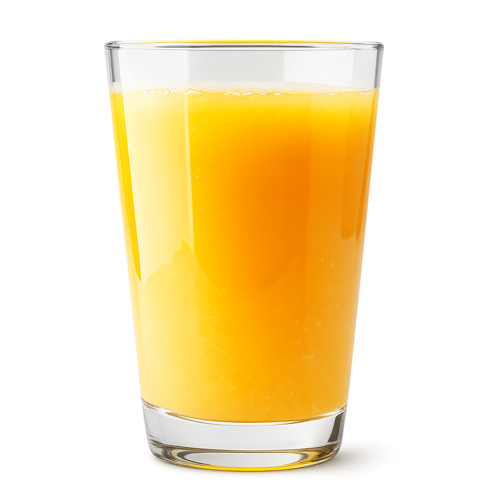
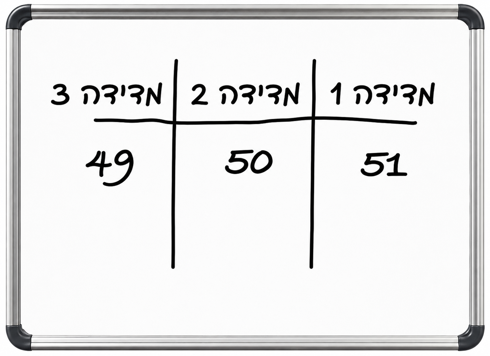
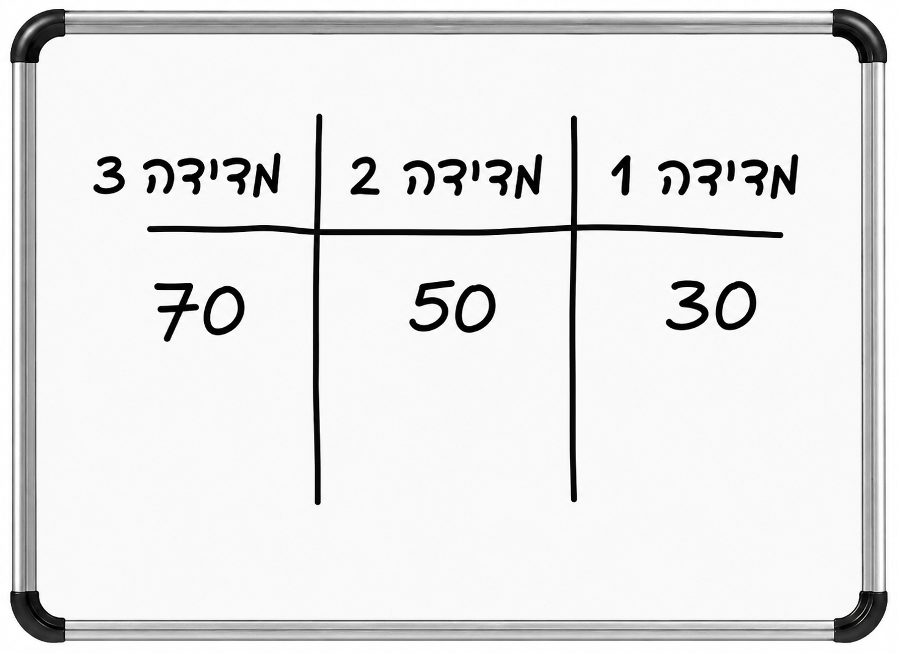

التمرين هو أفضل طريقة لتعزيز التعلم
وهناك تلميح من البداية! أجيبوا بشكل صحيح عن سؤالين فما فوق لتتمكّنوا من التقدّم.
ما هي الأداة المناسبة لقياس كمية العصير في الكوب المملوء بعصير البرتقال بدقة؟
اضغطوا على الإجابة الصحيحة.

قياس الحجم
اختاروا الأدوات الثلاث التي تقيس حجم السوائل. يمكن اختيار حتى 3 إجابات
قاست طالبة نفس الكمية مرتين: 20 و-22 ملل.
عمل رائع!
أنا واثق من أنكم ستنجحون!
لوح أمل:

لوح مها:

قاست كلٌّ من أمل ومها كمية السائل نفسها 3 مرات.
كتبت كل منهما نتائج القياس على لوحها. ومعدل كلتيهما 50 ملل.
أيهما نتائجها أكثر موثوقية؟